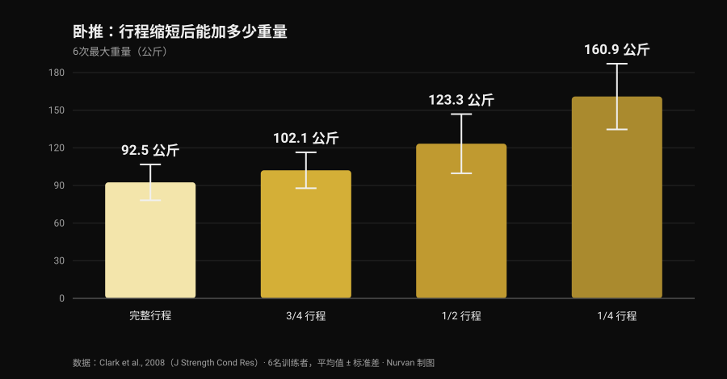
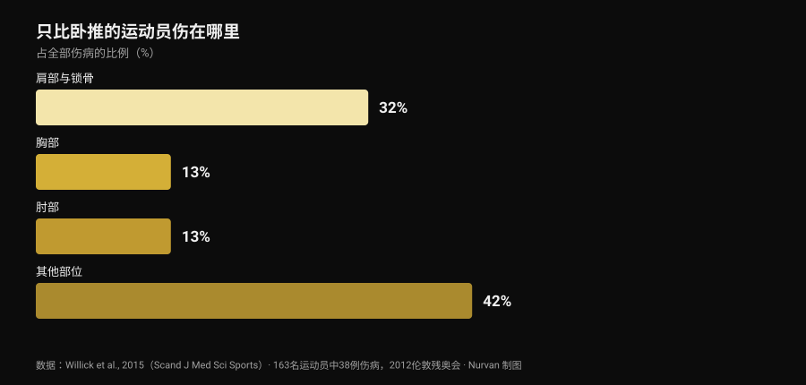

卧推 bulldog 握法：研究到底怎么说
信息流里刷到一条讲 bulldog 握法的技术帖：前臂内旋，杠铃斜压在掌心，承诺肘部压力更小、支撑更稳。描述本身是诚实的，圈子里也有人用了好多年。接着我去查，这个握法在文献里被测量过多少次。零次。这不是否定它的理由，而是把它如实讲清楚的理由，并且去用真正存在的数据：关于动作幅度的数据，以及关于做卧推的人到底伤在哪里的数据。

要点速览
- 没有任何收录研究测过它。 在 PubMed 搜索「bulldog grip」返回 零条结果（2026 年 10 月 29 日核实）：没有肌电图，没有重量对比，也没有疼痛或伤病数据。
- IPF 的条文不是大家传的那个意思。 2026 年 3 月 1 日起生效的技术规则要求"双手、拇指和手指必须完整握住杠铃，拇指环绕杠身"，并禁止反握。规则里根本没有"bulldog"这个词。
- 缩短行程增加的是公斤数，不是适应。 6 次最大重量从完整行程的 92.5 公斤 升到四分之一行程的 160.9 公斤（Clark et al., 2008）。但在十周训练中，完整行程在所有受测变式上都赢过各个部分行程组（Martínez-Cava et al., 2022）。
- 肘部不是卧推的主要问题。 在只比卧推的运动项目里，肩与锁骨占伤病的 32%，肘部占 13%（Willick et al., 2015）。
- 不过 40 岁以后肘部的分量会上升。 在 245 名力量举运动员中，肘部与手/腕的受伤率在 40 岁后显著升高（Siewe et al., 2011）。
bulldog 握法到底是什么
在几乎所有人用的握法里，杠铃大致压在掌心中部，前臂保持中立。bulldog 握法则是把前臂向内旋转——解剖学上叫 内旋，也就是让拇指转向身体的那个动作——杠铃最后斜压在掌上，靠近拇指根部而不是手掌正中。
由此得出三条推论，它们是几何推论，不是实验结果：
- 手腕更"叠"在前臂上方，被迫背伸的幅度更小；
- 杠铃压在更靠近小指侧的位置，所以触胸点略高；
- 肘部会稍微打开一些，因为前臂的旋转带着它往外走。
三条都合理，拿把尺子就能验证。但没有一条是实验室里测出来的。
研究缺了什么——以及为什么这件事重要
我在 2026 年 10 月 29 日查了 PubMed：「bulldog grip」一篇都没有。关于卧推，倒是有一批像样的 握距 研究——我们在卧推握距：宽、中还是窄里梳理过——但 手腕旋转 从来没人测过：既没测前臂屈肌的活动，也没测举起的重量，更没测肘部疼痛。
所以"bulldog 握法降低腕屈肌激活、因此缓解肘部疼痛"这句话，是一个合理但从未被检验的力学假设。用了之后感觉更好的人，并没有说错自己的体验：他报告的是一个对他有效的个人结果。不能做的，是把它变成普遍建议，然后称之为科学。
IPF 规则：条文里究竟写了什么
最常见的误解就卡在这里，与其看转述不如看原文。2026 年 3 月 1 日起生效的 IPF 技术规则对卧推握法给了两条限制：
- 双手、拇指和手指必须 完整握住 杠铃，拇指环绕杠身；
- 禁止反握，两食指之间的距离不得超过 81 厘米。
真正有启发的是和深蹲条文的对比：同一本规则在深蹲部分明确写着"不要求拇指环绕杠铃"。卧推没有这条豁免，拇指环绕是强制的。
由此可以得出什么？规则 从未提到 bulldog 握法，而一个拇指环绕、整只手完整握杠的 bulldog 并没有违反上述任何一条。真正会被亮红灯的是别的东西：无拇指握法（所谓的 suicide grip）、反握、食指超出 81 厘米标记——以及，这一条直接关系到把旋转做到极端的人：手只用指尖搭在杠上，而不是完整握住它。
如果你要参赛，实用结论很简单：在热身时把你的握法给裁判看，而不是等第一次试举做到一半。各国协会适用同一份条文，但比赛当天唯一算数的，是那位裁判认为你的握法是否"完整"。
行程更短、重量更大：理解这件事的关键数字
bulldog 这个话题里，有一部分是可以用硬数据锚定的，那就是动作幅度。如果握距不变而杠铃触胸点更高，行程会 变长；如果你同时改了握距，行程则可能变短。两种情况下你动的都是一个分量很重的变量。
到底有多重，2008 年的一项研究给出了数字：六名训练者在四种不同幅度下测试了卧推 6 次最大重量。

从完整行程到四分之一行程，重量几乎翻倍。更大的样本也呈现同样的趋势：在 42 名训练者中，最大重量随着幅度从完整降到三分之二再到三分之一而逐级上升（Martínez-Cava et al., 2019）。
问题在于时间拉长之后会发生什么。一项随机对照试验里，50 名男性执行了十周完全相同的计划，唯一区别是训练的幅度：完整行程组在三种受测卧推变式上都拿到最好结果，而部分行程组的进步幅度随着行程缩短而递减（Martínez-Cava et al., 2022）。在残奥力量举这个只比卧推的项目中，部分行程训练确实能用更大的重量、课末功能下降更少，但胸大肌——锁骨部与胸骨部——的激活在完整行程下更高（Mendonça et al., 2021）。
翻译给正在考虑 bulldog 的人：如果你一试重量就涨，先别庆祝，去看杠铃触在哪里。如果触得更低是因为你把握距放宽了，那部分增益属于几何学。反过来也成立，原帖这一点说得没错：握距不变而触胸点更高，行程会变长，动作会 更难，而不是更轻松。
肘部：做卧推的人真正伤在哪里
支持 bulldog 最常见的理由是缓解肘部。那就把这个肘部放回比例里看。

残奥力量举实质上就是只比卧推的项目：它是我们能拿到的、关于"推举把人推坏在哪里"最干净的样本。163 名运动员中记录到 38 例伤病，其中 61% 是慢性劳损。最受累的部位是肩与锁骨（32%）；胸部与肘部并列其后，各占 13%。
其他力量项目的图景一样：Keogh 与 Winwood 的系统综述列出肩、下背、膝、肘和腕/手为最常见部位，力量举大约 每 1000 小时训练一例伤病。在 245 名德国力量举运动员中，43.3% 报告日常训练中存在不适但没有中断训练，而肘部与手/腕的受伤率在 40 岁之后显著升高（Siewe et al., 2011）。
两条实用结论。第一：肘部疼的时候，握法只是重量、容量、频率和进阶旁边的一根小杠杆，先去看那几项。第二条更微妙：把内旋做到极端会让肩关节处于更闭锁的位置，而 2024 年的一篇综述正是把 动作过程中关节处于易损位置 列为举重类项目肩部损伤的风险因素之一（Daher et al., 2024）。用肘部的小不适换来肩部的问题并不划算：肩才是最容易受伤的关节。
研究到底怎么说
「bulldog 握法降低腕屈肌激活、保护肘部」 零篇收录研究，没有任何肌电图。这是力学假设，不是结论。
「它带来更高的触胸点和更自然的肘部外展」 几何上说得通：前臂旋转会把杠铃推向小指侧。但肘部角度实际改变多少，没人测过。
「握距不变时，触点更高会增加行程、因此更难」 与幅度和重量的关系一致：行程越长，杠上的公斤数越少。
「缩短行程是一种优势」 它确实大幅提高重量（完整行程 92.5 公斤对四分之一行程 160.9 公斤），但在十周训练中完整行程在每个变式上都带来更大的适应。
「IPF 禁止它，因为规则要求拇指环绕」 2026 年规则从未提到 bulldog：它禁止反握，并要求双手、拇指和手指完整握住杠铃。拇指环绕的 bulldog 同时满足这两条。
「它能帮助那些肘部收得太紧的新手」 没有关于新手、技术与握法的数据。而且推举中最容易受伤的是肩，不是肘。
怎么落地
- 如果不疼、数字也在涨，别为了跟风去改。 你用了多年的握法，也是你技术建立起来的那个握法；换掉它，接下来几周会损失一部分自动化。
- 如果要试，保持拇指环绕、整只手握满杠铃。 这是留在竞赛规则内的版本，也是杠铃不会脱手的版本。
- 前后测量触胸点。 用旧握法和新握法分别标记杠铃落在胸口的位置：这是判断你改的是握法还是行程的唯一办法。
- 给它三到四周，外加一个数字标准。 同样的重量、同样的组数、同样的触点：如果在相同 RIR（储备次数，也就是你还剩几次）下重量没动，那这个握法没给你带来任何东西。
- 肘部疼就先看计划。 重量跳得太快、太多组接近力竭、没有减载周，这些比手腕旋转解释力强得多。组数、间歇和进阶的逻辑在增肌每组做多少次。
- 持续数周、或者夜里把你疼醒的疼痛，不是握法问题。 那属于医疗专业人员，不属于一条帖子。
- 如果参赛，先问裁判。 热身区的三十秒，胜过网上任何一段图注。
试用 Nurvan — 改了握法，让数字来告诉你有没有用
技术改动要用几周来评判，而不是一节课：你需要把同一个动作的重量、次数和 RIR 并排看到，并标注你在什么时候改了什么。在 Nurvan 里，你给每一组卧推记录 RIR，加上一条关于所用变式的备注，然后拿到逐月的重量曲线——这样"bulldog 到底有没有让我举得更多"就有答案，而不是印象。热身组还会按当天的工作重量自动给出，这正是一个新握法还不顺手时最需要的。
常见问题
卧推的 bulldog 握法是什么？
这是一种把前臂向内旋转、让杠铃斜压在掌上靠近拇指根部而非手掌正中的握法。手腕与前臂更对齐，杠铃触胸的位置略高。它不是无拇指握法：做对的时候，拇指仍然环绕着杠身。
bulldog 握法在 IPF 比赛中合规吗？
2026 年 3 月 1 日起生效的 IPF 技术规则没有提到它。规则要求双手、拇指和手指完整握住杠铃且拇指环绕，并禁止反握：拇指环绕、整只手握满杠铃的 bulldog 同时满足这两条。真正违规的是无拇指握法、反握，以及只用指尖搭在杠上的手。有疑问就在上场前给裁判看一下。
bulldog 握法能举得更重吗？
没有研究测过。如果你的测试里重量上去了，最可能的原因不是握法本身，而是动作幅度：其他条件相同时，缩短行程会显著提高可举起的重量，而握距不变、触点更高则会拉长行程，让动作更难。
bulldog 握法伤肩吗？
没有直接证据。已知的是，肩是卧推比赛者最常受累的部位（占伤病 32%），而动作过程中关节处于易损位置是有记录的风险因素之一。所以明显的内旋值得逐步引入，一旦肩部出现不适就停下。
延伸阅读
- 卧推握距：宽、中还是窄？ —— 握距变化对胸肌和肱三头肌到底改变了什么，有数字。
- 哑铃卧推还是飞鸟：哪个让胸肌长得更多？ —— 推举与孤立动作对胸肌的对比。
- 增肌每组做多少次？8-12 次的迷思 —— 组数、间歇和进阶，比握法分量重得多的杠杆。
参考文献
- Clark RA, Bryant AL, Humphries B, 2008. An examination of strength and concentric work ratios during variable range of motion training. Journal of Strength and Conditioning Research 22(5):1716-9. PMID 18714211 · DOI 10.1519/JSC.0b013e318173c529
- Martínez-Cava A, Morán-Navarro R, Hernández-Belmonte A, Courel-Ibáñez J, Conesa-Ros E, González-Badillo JJ, Pallarés JG, 2019. Range of Motion and Sticking Region Effects on the Bench Press Load-Velocity Relationship. Journal of Sports Science & Medicine 18(4):645-652. PMID 31827348
- Martínez-Cava A, Hernández-Belmonte A, Courel-Ibáñez J, Morán-Navarro R, González-Badillo JJ, Pallarés JG, 2022. Bench Press at Full Range of Motion Produces Greater Neuromuscular Adaptations Than Partial Executions After Prolonged Resistance Training. Journal of Strength and Conditioning Research 36(1):10-15. PMID 31567719 · DOI 10.1519/JSC.0000000000003391
- Mendonça TP, Aidar FJ, Matos DG, Souza RF, Marçal AC, Almeida-Neto PF, Cabral BG, Garrido ND, Neiva HP, Marinho DA, Marques MC, Reis VM, 2021. Force production and muscle activation during partial vs. full range of motion in Paralympic Powerlifting. PLoS One 16(10):e0257810. PMID 34644331 · DOI 10.1371/journal.pone.0257810
- Willick SE, Cushman DM, Blauwet CA, Emery C, Webborn N, Derman W, Schwellnus M, Stomphorst J, Van de Vliet P, 2015. The epidemiology of injuries in powerlifting at the London 2012 Paralympic Games: An analysis of 1411 athlete-days. Scandinavian Journal of Medicine & Science in Sports 26(10):1233-8. PMID 26453890 · DOI 10.1111/sms.12554
- Siewe J, Rudat J, Röllinghoff M, Schlegel UJ, Eysel P, Michael JW-P, 2011. Injuries and overuse syndromes in powerlifting. International Journal of Sports Medicine 32(9):703-11. PMID 21590644 · DOI 10.1055/s-0031-1277207
- Keogh JWL, Winwood PW, 2017. The Epidemiology of Injuries Across the Weight-Training Sports. Sports Medicine 47(3):479-501. PMID 27328853 · DOI 10.1007/s40279-016-0575-0
- Daher M, Jabre S, Casey JC, Fares MY, Boufadel P, Lopez R, Lawand J, Mansour J, Abboud JA, 2024. Shouldering the load: A scoping review of incidence, types, and risk factors of shoulder injuries in weight-lifting athletes. Shoulder & Elbow 17(3):254-263. PMID 39552690 · DOI 10.1177/17585732241258743
- International Powerlifting Federation, 2026. IPF Technical Rules Book，自 2026 年 3 月 1 日生效，第 4.2 节（Bench Press — Rules of Performance）。官方 PDF
文献通过 PubMed 检索。起点是 Alfred Jong（alfred.reformance，Reformance Training）2026 年 9 月 25 日的帖子，原帖。我们只读取了作者、日期和文案：没有复制任何文字或图片。本文完全基于一手文献和官方规则重新撰写。
Giammaria Loi 是 Nurvan 的创始人。他自 2012 年开始力量训练，自 2013 年起担任 FIPE 认证的私人教练与教练，自 2018 年起在国家级力量举比赛中参赛。他署名的每篇文章都从科学研究出发，落到健身房里真正有效的做法。
注意：本文为信息性内容，不能替代医生或专业人士的意见。如果肘部、手腕或肩部持续疼痛，或者在减量之后不适仍然加重，请就医或咨询物理治疗师，而不是在某个技术细节里寻找答案。